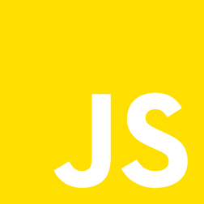
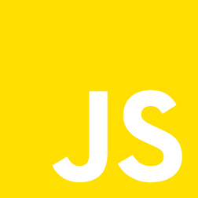

Horloge javascript
En début de mon apprentissage en développement, j'ai expérimenté le javascript. J'ai réalisé une horloge fonctionnelle pour m'entrainer et essayer de comprendre le fonctionnement de ce language de programmation. Ce projet ma également permis de progresser en CSS, car la structure de l'horloge et réaliser avec HTML et CSS.
Outils

 


Pour ce projet, j'ai utilisé HTML pour la structure du site, CSS pour gérer le style, javascript pour récupérer l'heure de la machine et animer les aiguilles et enfin Visual Studio Code comme environnement de développement.
Mes autres projets